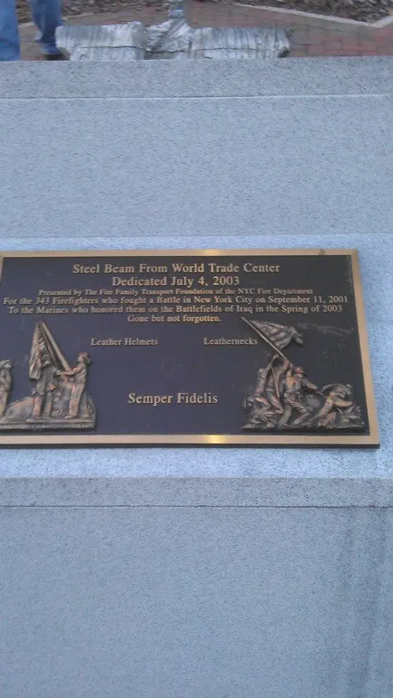
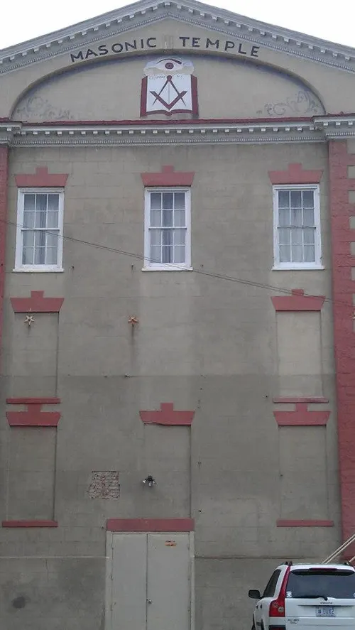
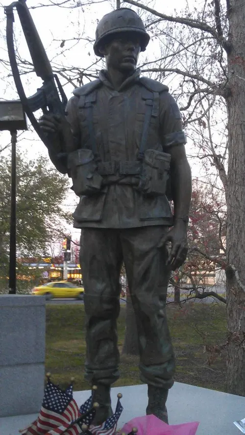
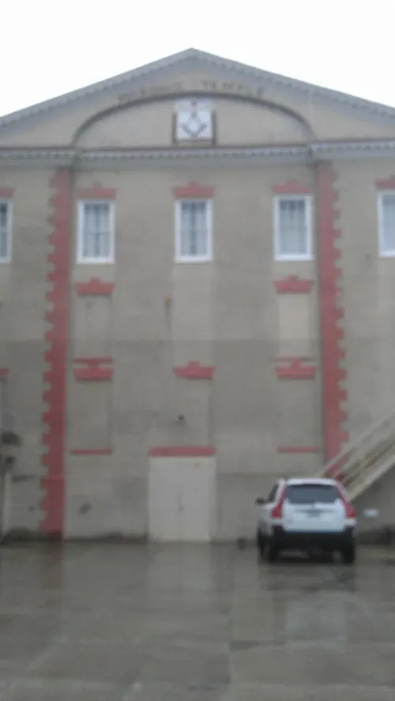
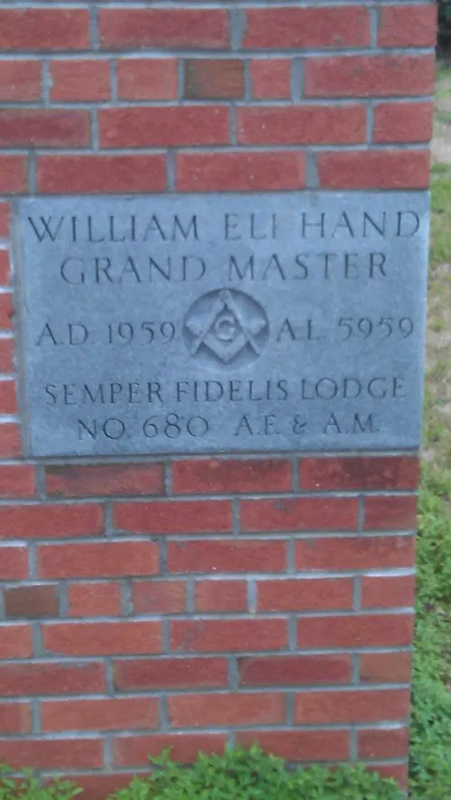
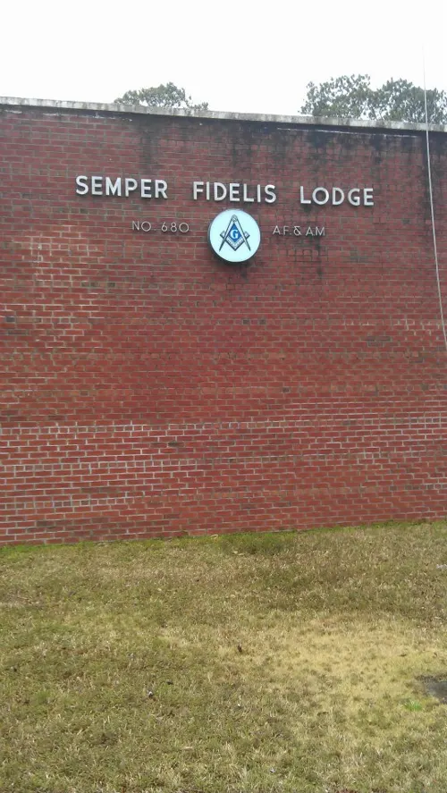
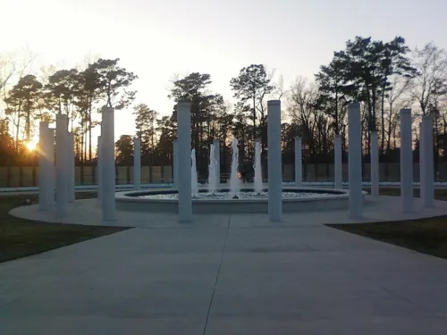
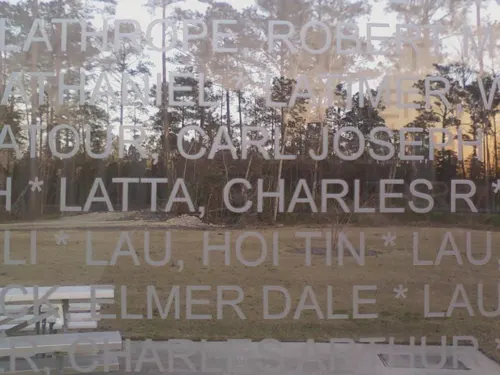
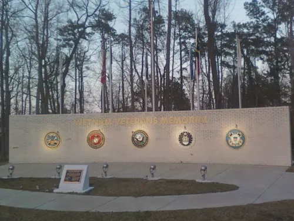

North Carolina road trip
March 2013

On March 23, 2013 I drove through North Carolina for a day of memorials and lodge visits.
Stops included a veterans park with fountains, bronze plaques, and a wall naming LATTA, CHARLES R., plus the Masonic Temple and Semper Fidelis Lodge No. 680.


















